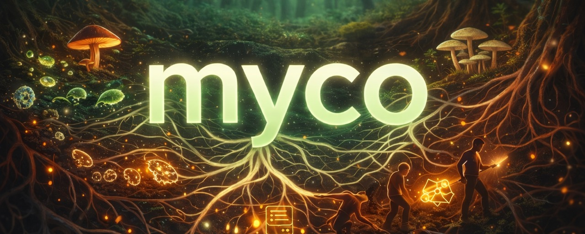

01 · Capture
Every session reaches the team.
Your agents' hooks send each session's prompts, the work of each turn, and the plans they write to your Deployment. Nothing about the agent changes.
Myco works alongside the coding agents you already use. It captures what they do, learns from it, and hands what your team knows back to every agent on the project.

Your team's knowledge lives on a Deployment you run yourself, on Cloudflare or on your own machine. Each person installs the binary, signs in with an invite link, and connects their agents.
Myco's own agent reads what your agents did and keeps what is worth knowing, curating it as the code moves on, then hands it back to every agent on the team.
Your agents' hooks send each session's prompts, the work of each turn, and the plans they write to your Deployment. Nothing about the agent changes.
Myco titles every session and draws out decisions, gotchas, discoveries, trade-offs and fixes. It supersedes what the code has moved past and consolidates what keeps coming back.
Relevant spores arrive with each prompt, and MCP tools let any agent on the team search and read everything the project knows. External agents can read it too, with an access key.
Myco's work runs on a worker, a coding agent you already use on an administrator's machine. The Deployment keeps the queue and checks every result.
Hooks send each session, prompt and plan to the Deployment as your agent works.
hooksevery turnWhen a session ends, Myco gives it a title and a summary, so the history reads as work done.
title-summaryeach sessionMyco reads the prompts it has not read and records decisions, gotchas, discoveries, trade-offs and fixes as spores.
extract-curatehourlySpores the code has moved past are superseded, and ones that keep coming back are consolidated.
supersede · consolidateongoingMyco reads an existing codebase and its git history and writes the project's first spores.
The gotcha one agent hit last week arrives with the prompt of the next agent that would have hit it.
Curation keeps the project's knowledge true to the code as it is now, not a record of everything it ever was.
Each project chooses what its agents receive. An administrator turns it on per project, on the Deployment's dashboard.
A Deployment holds your team's sessions, spores and plans, answers your agents over MCP, and schedules Myco's work. Run it on Cloudflare or on your own laptop or virtual machine.
myco login signs a machine in with it.No wrappers, no forked CLIs, no ecosystem lock-in. myco login gives each agent on your machine its capture hooks and Myco tools, and it keeps working the way it always has.
Guides cover everything from your first Deployment to connecting every agent on the team.
Set up a Deployment, invite people, sign a machine in and connect its repositories.
Read guide Getting startedMove a Myco 1.4 machine to 2.0 with one command, and keep everything it held.
Read guide Getting startedRun a Deployment on a laptop, a virtual machine or Cloudflare.
Read guide Using MycoWhat your agents did, what Myco learned from it, and the pages administrators run the Deployment from.
Read guide Using MycoWhat Myco produces from your sessions, where that work runs, and what agents get back.
Read guide Using MycoThe agents Myco captures, how to connect them, and what is captured.
Read guide ReferenceThe MCP tools agents use to search and curate a project's knowledge.
Read guide Using MycoAccess keys for agents that are not members, such as a hosted code reviewer.
Read guide Using MycoDeployment settings, what Myco does in each project, and sandboxes and CI.
Read guide Using MycoThe messages people meet most, and what to do about each.
Read guideMyco is independent open source from Goondocks Consulting. Sponsorship helps fund maintenance, real workflow testing, documentation, release work, and the intelligence pipeline that keeps project knowledge evolving.
Your team's knowledge lives on a Deployment you run, on Cloudflare or on your own machine. No vendor lock-in, and no agent left out.